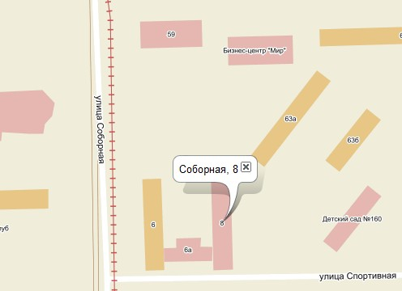

В Яндексе сегодня два важных нововведения.
По-первых Яндекс начал индексировать профили Вконтакте, а это значит, что скоро все открытые анкеты будут доступны прямо в поиске Яндекса в виде сниппета с вашими данными.
Во-вторых Яндекс сделал публичным API так называемых народных карт.

Эти карты будут востребованы в тех городах, для которых официальные карты Яндекса пока не отрисованы, например в Кемерово.
Ничего не оставалось, кроме заложить начало новому разделу на Кемеровском городском сайте. Итак — Карта Кемерово.
«Народные карты» создаются самими пользователями поисковой системы, а официальный релиз карт планируется Яндексом уже на начало будущего года.